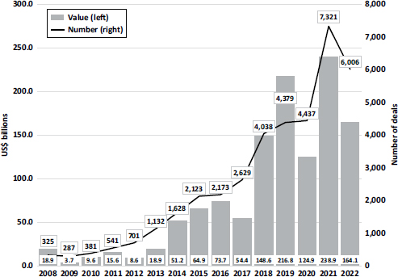
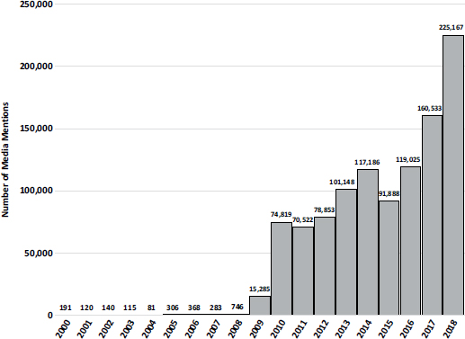
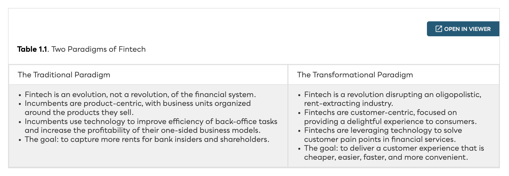
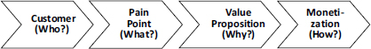
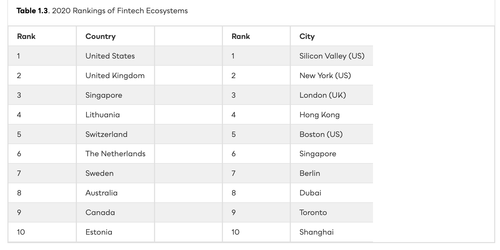

The application of digital technology to deliver, augment, or fundamentally redesign financial services — spanning payments, credit intermediation, asset management, risk transfer, and the market infrastructure beneath them.
$1.2T cumulative private capital across 38,000+ deals. Note the cyclicality: 2021 peak (~$240B, ~7,300 deals) vs. 2023 trough (~$113B, KPMG). Discussion: what does the 2022–23 drawdown tell us about market maturity?


The canonical periodisation, formalised in a 2017 CFA Institute study (after Arner, Barberis & Buckley 2015), frames fintech as three overlapping waves — each defined by who controlled the technology and what regulatory bargain prevailed.
Incumbents optimise existing value chains — JPMorgan $15.3B tech spend (2023), Goldman’s Marcus, DBS digibank. Same activity, lower unit cost.
Stripe unbundled merchant acquiring; Ant Group re-bundled payments + credit + wealth (Yu’e Bao: $268B AUM peak). New cost structures create new defaults.

Four analytical moves — customer, pain point, value proposition, monetization. The rest of the course is built on these.

Apply these to any fintech firm before reading their S-1 or pitch deck.
Activity-based taxonomy from Fintech Explained (Ch. 1). Most firms span 2–3; identify which is load-bearing for unit economics.
The textbook identifies four types of fintech companies, each with different strengths in innovation culture, technical expertise, customer base, data, scale, capital, and brand.
| Strength | Start-up | Mature | Digital bank | Tech platform |
|---|---|---|---|---|
| Innovation culture | ● | ● | · | ● |
| Technical expertise | ● | ● | ● | ● |
| Financial expertise | · | ● | ● | · |
| Regulatory expertise | · | · | ● | · |
| Risk management | · | · | ● | · |
| IT systems | ● | ● | ● | ● |
| Economies of scale | · | ● | · | ● |
| Access to customers | · | ● | · | ● |
| Access to funding | · | ● | ● | ● |
| Access to talent | ● | ● | · | ● |
Every fintech firm is built from a subset. For each firm we ask: which of the ten, in what combination, and which is the defensibility bottleneck?
Fintechs do not emerge in isolation. They depend on a diverse ecosystem of innovation labs, accelerators (Y Combinator, Level39), technology hubs, investors, regulators, and universities.

1.7 billion adults remain unbanked (World Bank) — but two-thirds own a mobile phone. Over the last decade, 1.2 billion gained access primarily via mobile money. M-Pesa, GCash, and bKash demonstrate fintech as infrastructure for economic development.